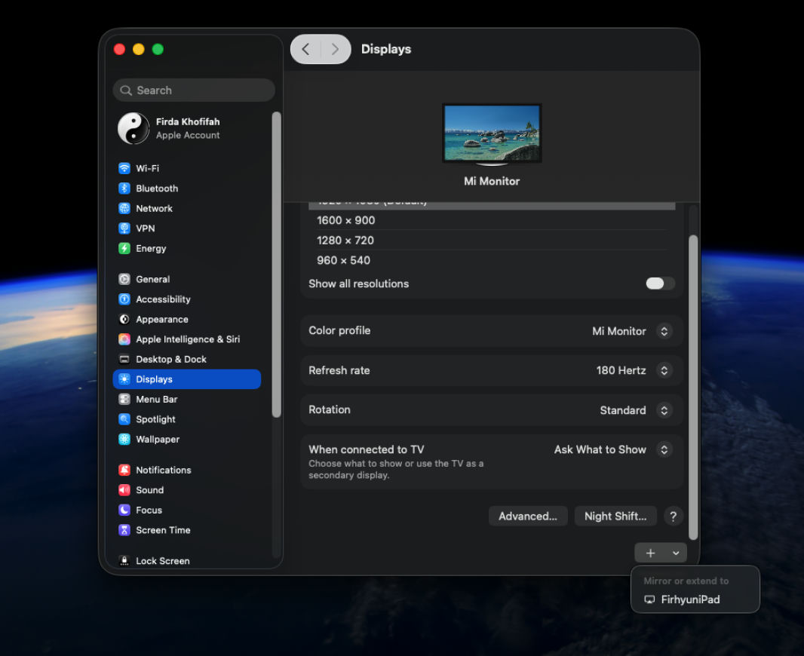
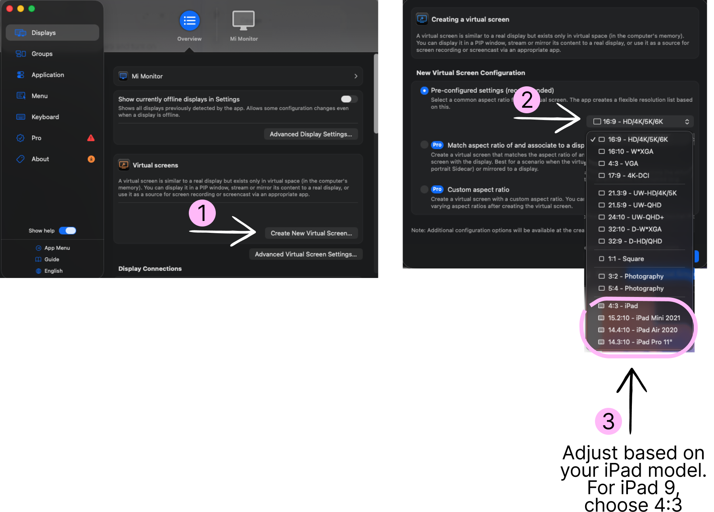
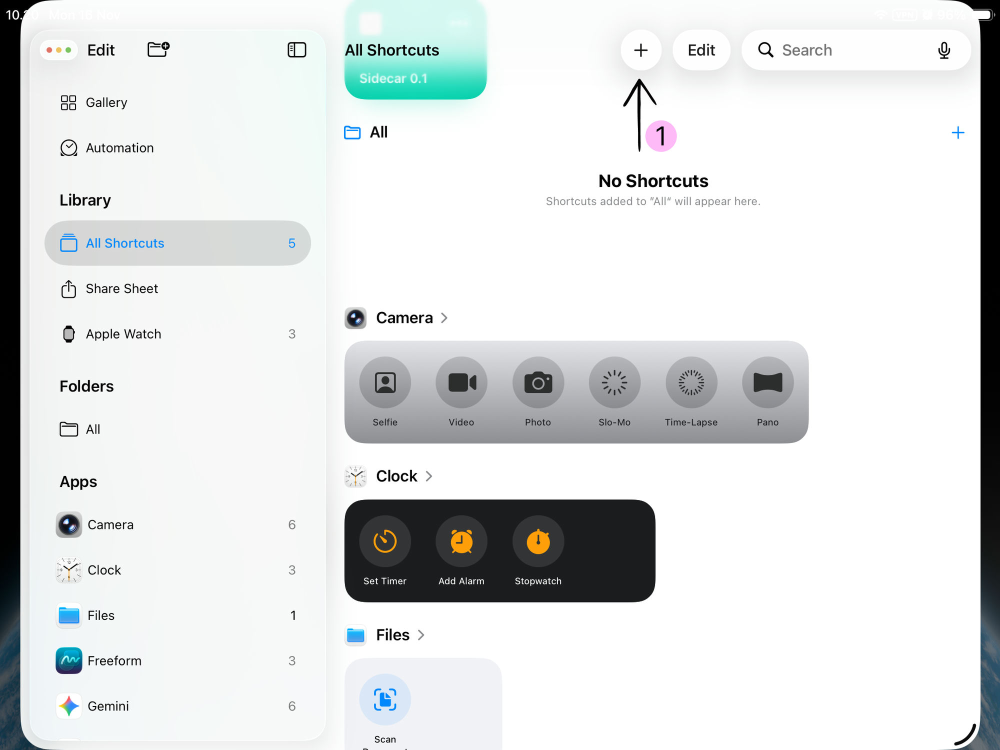
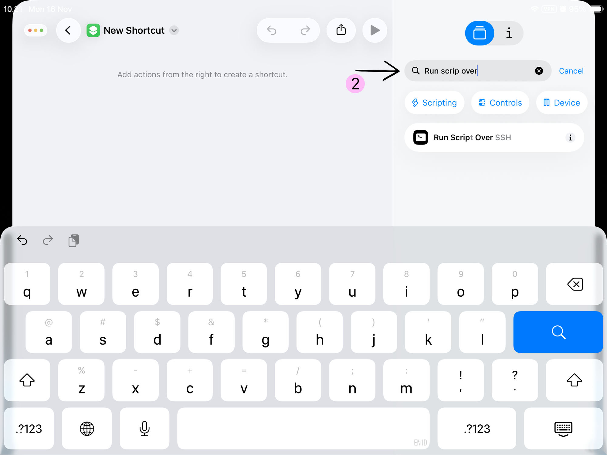
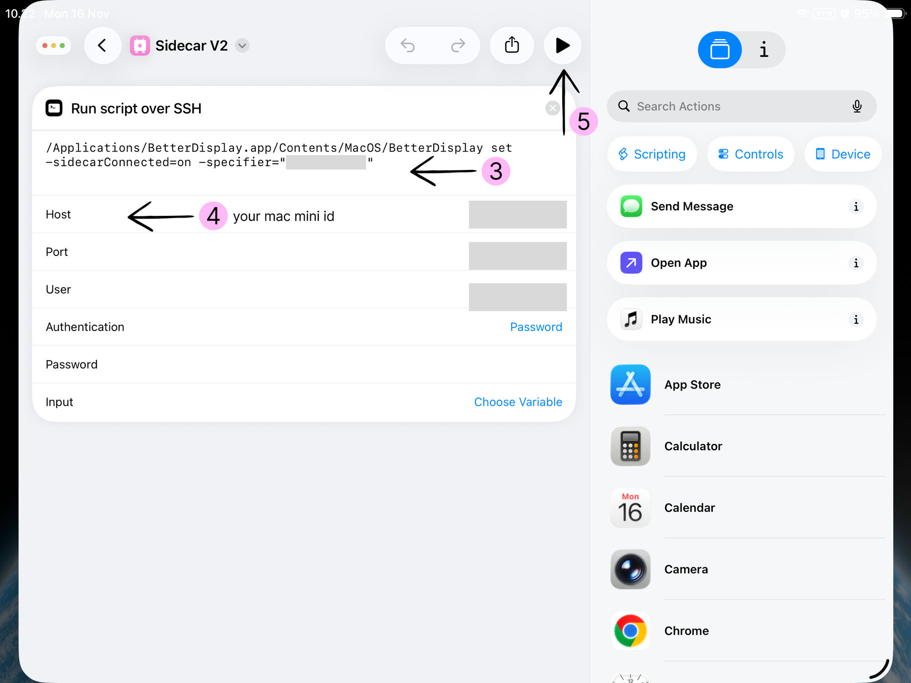

Use your iPad as the main display for Mac mini.
A focused, tested workflow using Sidecar, BetterDisplay, a Virtual Display, Login Items, SSH, and an iPad Shortcut.
Keep HDMI available until the final test.
Start with a normal monitor connected. This guide is for a local Sidecar workflow after macOS login—it is not remote desktop and it does not bypass FileVault or the login screen.
Start from a setup you can recover.
Use HDMI first, check the Sidecar prerequisites, and prove that the iPad can display the Mac before adding automation.
Connect the Mac mini to a temporary HDMI display.
- Connect a monitor or TV through HDMI.
- Connect keyboard and mouse, then log in to macOS.
- Leave HDMI connected throughout setup and testing.
Check the Sidecar prerequisites.
Use the same Apple Account with two-factor authentication, enable Wi-Fi, Bluetooth, and Handoff, and keep the devices nearby. For the first wired test, use a USB-C to Lightning cable that supports data.
Prove Sidecar works manually.
This is the baseline. The iPad must show the Mac desktop reliably before the workflow becomes automated.
Add the iPad from macOS Displays.
- Open System Settings → Displays.
- Choose Add Display (+).
- Select your iPad under Mirror or extend to.
- Confirm the Mac desktop appears on the iPad and test moving a window.

Create the display layer for headless use.
Install BetterDisplay, keep one Virtual Display as a backup, then test the Sidecar CLI commands directly on the Mac.
Install BetterDisplay and create one Virtual Display.
Enable BetterDisplay at login. In BetterDisplay, create a single Virtual Screen and use the iPad-oriented aspect ratio when appropriate for your setup. Keep only one backup display to avoid confusion.

Find the iPad name recognized by Sidecar.
/Applications/BetterDisplay.app/Contents/MacOS/BetterDisplay get -sidecarListUse the exact name or UUID returned on your Mac. Do not copy another person's device identifier.
Test the Sidecar connection from BetterDisplay.
/Applications/BetterDisplay.app/Contents/MacOS/BetterDisplay set -sidecarConnected=on -specifier="NAMA_IPAD_ANDA"Run the reconnect workflow after login.
Automation belongs after the manual workflow is proven. It should connect Sidecar, wait for the display, then set the verified iPad display as Main Display.
Prepare and test the custom automation on the Mac.
The runner should make sure BetterDisplay is available, request the correct Sidecar connection, wait until the iPad appears as a display, and only then set it as Main Display.
Add the tested automation to Open at Login.
- Save the tested automation as an app/workflow.
- Open System Settings → General → Login Items & Extensions.
- Add the automation under Open at Login.
- Logout and login again while HDMI is still connected.

Reconnect Sidecar from the iPad.
Enable SSH only for the intended Mac user, then create a Shortcut that runs the tested BetterDisplay connection command.
Enable Remote Login on the Mac.
- Open System Settings → General → Sharing.
- Turn on Remote Login.
- Prefer Only these users and allow only the account you need.

Create a new Shortcut.
Open Shortcuts on the iPad and tap the + button to create a new Shortcut.

Add “Run Script Over SSH”.
Search for the SSH action and add Run Script Over SSH.

Enter the command and your Mac connection details.
/Applications/BetterDisplay.app/Contents/MacOS/BetterDisplay set -sidecarConnected=on -specifier="NAMA_IPAD_ANDA"Set Host to the Mac's reachable local host/IP, Port to 22 unless changed, User to the macOS account, and configure authentication securely.

Remove HDMI only after every layer works.
Test the wired-to-wireless transition, reconnect behavior, and the complete workflow while a recovery monitor is still nearby.
Test Lightning → wireless Sidecar.
- Connect the iPad with a data-capable USB-C to Lightning cable.
- Confirm Sidecar and Main Display behavior.
- Keep Wi-Fi, Bluetooth, and Handoff on, then disconnect the cable.
- Confirm wireless Sidecar returns and remains usable.
Run the final test without HDMI.
Only after the Mac is logged in, BetterDisplay is running, the Virtual Display is active, and the Shortcut works: save your work, disconnect HDMI, then test reconnecting Sidecar from the iPad.
Troubleshooting.
Debug the lowest layer first instead of changing several parts at once.
iPad does not appear in Displays
Check Apple Account, Wi-Fi, Bluetooth, Handoff, compatibility, distance, then retry with a data cable and Trust prompt.
BetterDisplay sidecarList is empty
Confirm BetterDisplay is running and first verify that normal macOS Sidecar works.
Shortcut reports connection refused or timeout
Check that the Mac is on and logged in, Remote Login is enabled, host/IP and user are correct, and the local network allows the connection.
SSH succeeds but the iPad shows no Mac desktop
SSH success is not Sidecar success. Run the BetterDisplay command locally on the Mac and verify Sidecar manually.
Restart leaves you without a display
Login Items wait until macOS login. Reconnect HDMI for recovery and log in normally.
FAQ & safety.
Is this remote desktop?
No. This workflow uses local Sidecar. Use a separate remote desktop solution for access across the internet.
Can it bypass FileVault or the login screen?
No. The described Login Item automation starts after the user session begins.
Why use a Virtual Display?
It acts as a backup display layer for the headless workflow. It does not itself send the Mac image to the iPad.
Why are commands copyable?
Because they are required tools. Protect access to the guide, not the commands legitimate buyers need to complete it.